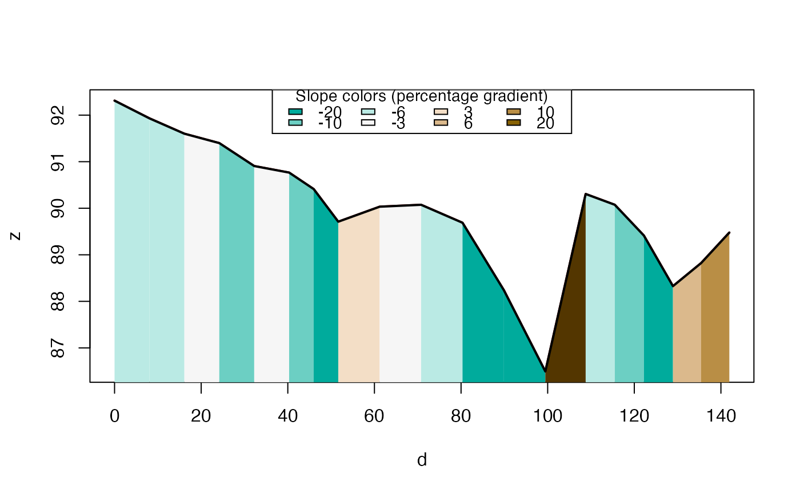

R/slopes.R
elevation_add.RdTake a linestring and add a third (z) dimension to its coordinates
elevation_add( routes, dem = NULL, method = "bilinear", terra = has_terra() && methods::is(dem, "SpatRaster") )
| routes | Routes, the gradients of which are to be calculated.
The object must be of class |
|---|---|
| dem | Raster overlapping with |
| method | The method of estimating elevation at points,
passed to the |
| terra | Should the |
library(sf) routes = lisbon_road_segments[204, ] dem = dem_lisbon_raster (r3d = elevation_add(routes, dem))#> Simple feature collection with 1 feature and 21 fields #> Active geometry column: geom #> Geometry type: LINESTRING #> Dimension: XYZ #> Bounding box: xmin: -87080.48 ymin: -105629.6 xmax: -87056.99 ymax: -105506.3 #> z_range: zmin: 86.49414 zmax: 92.31126 #> Projected CRS: ETRS89 / Portugal TM06 #> # A tibble: 1 × 23 #> OBJECTID fid_1 gradient_s Shape_Leng Z_Min Z_Max Z_Mean SLength Min_Slope #> * <int> <dbl> <dbl> <dbl> <dbl> <dbl> <dbl> <dbl> <dbl> #> 1 2997 2997 0.0780 182. 86.5 92.3 89.9 183. 0.334 #> # … with 14 more variables: Max_Slope <dbl>, Avg_Slope <dbl>, z0 <dbl>, #> # z1 <dbl>, gradverifi <dbl>, query <chr>, lat <dbl>, lon <dbl>, #> # lat_min <dbl>, lat_max <dbl>, lon_min <dbl>, lon_max <dbl>, #> # bbox <POLYGON [°]>, geom <LINESTRING [m]>#> NULL#> zmin zmax #> 86.49414 92.31126# \donttest{ # Get elevation data (requires internet connection and API key): r3d_get = elevation_add(cyclestreets_route)#>#> Warning: no mapbox key found #> #> To set your Mapbox API key obtain a key from https://account.mapbox.com/access-tokens/ #> #> 1) Run this to set for the session 'Sys.setenv(MAPBOX_API_KEY=<yourkey>)' #> #> OR, #> #> 2) To set peramanently store 'MAPBOX_API_KEY=<yourkey>' in ~/.Renviron #> #> See 'help(ceramic::get_api_key)'#> Preparing to download: 6 tiles at zoom = 14 from #> https://api.mapbox.com/v4/mapbox.terrain-rgb/#> Error in curl::curl_download(url = api_query, outfile): HTTP error 401.#> Error in st_crs(x): object 'r3d_get' not found# }